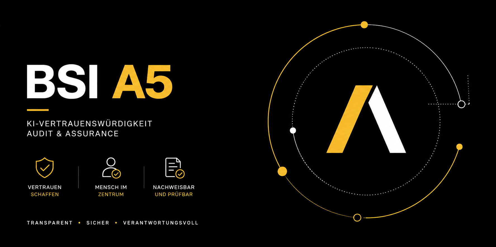

1
Horizontales Basismodul
Grundanforderungen für Governance, Daten, Transparenz, Human Oversight, Robustness, Performance, Bias, Logging, Monitoring, Security und Accountability.
BSI A5 · KI-Vertrauenswürdigkeit · Audit & Assurance

Die auf dieser Seite ausgewerteten A5-Unterlagen des Bundesamts für Sicherheit in der Informationstechnik liegen als Community-Drafts Version 0.9 vom 30.06.2026 vor. A5 wird hier als Prüf- und Orientierungsrahmen für vertrauenswürdige KI, interne Kontrollen und eine mögliche spätere unabhängige Assurance nach ISAE 3000 eingeordnet. Die Darstellung behauptet weder eine gesetzliche Pflicht noch ein bestehendes A5-Testat.
Die AI Audit and Assurance Assessment Architecture (A5) des Bundesamts für Sicherheit in der Informationstechnik verbindet KI-Governance, technische Vertrauenswürdigkeit und unabhängige Assurance über den gesamten KI-Lebenszyklus. Diese Leitseite ordnet die drei BSI-A5-Dokumente für Gesundheitswesen, Pflege und digitale Daseinsvorsorge ein.
A5 schafft eine modulare Prüfarchitektur, mit der die Vertrauenswürdigkeit von KI-Systemen, KI-Anwendungen, Komponenten, Modellen oder Datensätzen strukturiert beschrieben und geprüft werden kann.
Grundanforderungen für Governance, Daten, Transparenz, Human Oversight, Robustness, Performance, Bias, Logging, Monitoring, Security und Accountability.
Ergänzen das Basismodul um technologie- oder betriebsspezifische Anforderungen. Das vorliegende Cloud-Modul konkretisiert die Vertrauenswürdigkeit der zugrundeliegenden Cloud-Infrastruktur.
Die A5-Prüfmethodik beschreibt eine unabhängige Prüfung nach ISAE 3000 mit hinreichender Sicherheit und einer strukturierten Systembeschreibung als Prüfgegenstand.
Risikomanagement, Policies, Metriken, Datenschutz, Security Governance, Human Oversight und Kompetenz.
Datenmanagement, Datenqualität, Provenance, Entwicklungsprozess sowie Integration vortrainierter und externer Modelle.
KI-spezifische Cybersecurity- und Robustness-Tests, einschließlich Adversarial Testing und Red Teaming.
Kontrollierte Releases, Change-Management, Test, Freigabe, Versionierung und Rollback.
Monitoring, Logging, Incident Response, Fallback, Updates, Daten- und Performanceüberwachung.
Geordnete Außerbetriebnahme, Daten- und Modellstilllegung sowie nachvollziehbarer End-of-Life-Prozess.
Das horizontale Basismodul betrachtet Vertrauenswürdigkeit nicht als Einzelmerkmal, sondern als Zusammenwirken technischer und organisatorischer Kontrollen.
Organisation, Rollen, Verantwortlichkeiten, Policies und Rechenschaft.
Qualität, Integrität, Zugriff und Umgang mit Daten über den Lebenszyklus.
Traceability, Erklärbarkeit und adressatengerechte Nutzerinformation.
Menschliche Handlungsfähigkeit, Eingriffsmöglichkeiten und Aufsicht.
Fehlertoleranz, Resilienz, Angriffsflächen und KI-spezifische Bedrohungen.
Kontextbezogene Zielmetriken, Schwellenwerte und Leistungsfähigkeit.
Rekonstruktion, Drift-Erkennung, Ereignisüberwachung und regulatorische Nachweise.
Diskriminierungsrisiken, Auditierbarkeit, Rest-Risiken und Rechtsbehelf.
Der entscheidende Schritt für A5-Readiness ist eine präzise, prüfbare Systembeschreibung. A5 lässt sowohl vollständige KI-Systeme als auch Anwendungen, Komponenten, Modelle, Datensätze oder andere abgegrenzte Teile als Bewertungsobjekt zu.
| Baustein | Mindestinhalt | Praxisnachweis |
|---|---|---|
| Identifikation | Name, Version, Kennung, Verantwortungsträger, Rolle und Position in der KI-Wertschöpfungskette. | Systemsteckbrief, Versionsregister |
| Systemgrenzen | Inventar, KI-/Nicht-KI-Komponenten, ausgeschlossene Komponenten, Schnittstellen und Laufumgebung. | Architekturdiagramm, Komponentenliste |
| Einsatzkontext | Intended Use / konkreter Use Case, Bereitstellungsmodus, Nutzer, Grenzen, Fehlanwendungen und operative Annahmen. | Use-Case-Dokument, Einsatzbedingungen |
| Human Oversight | Autonomiegrad, Kontrollpunkte, Eingriff, Verwerfung, Korrektur, Not-Aus und Fallback. | Freigabeworkflow, SOP, Override-Log |
| Lebenszyklus | Aktuelle Phase, relevante Prozesse, Änderungen, Updates und Anpassungen nach Inbetriebnahme. | Lifecycle-/Change-Register |
| Funktion | Aufgabenart, Ein- und Ausgaben, Verarbeitung, Modellarchitektur, Qualitätsziele und bekannte Fehlercharakteristika. | Technische Dokumentation, Testplan |
| KI-Eigenschaften | KI-Technik, Lernparadigma, Anpassungsverhalten, Foundation-/Drittmodelle und Einbindung. | Model Card / AI-BOM |
| Daten | Quellen, Herkunft, Lineage, Training/Validierung/Test, Aufbereitung, Datenlücken und Unterrepräsentationen. | Data Sheet, Provenance-Register |
A5 richtet den Blick nicht nur auf Dokumente, sondern auf tatsächlich eingerichtete Kontrollen. Für die Praxis bietet sich eine Control-Matrix an.
Risiko → A5-Kriterium → Kontrolle → Verantwortlicher → Frequenz → Evidenz → Restrisiko. Dieses Muster verbindet Risikomanagement, operative Umsetzung und spätere Prüfungsnachweise.
| Beispiel | Risiko | Kontrolle | Evidenz |
|---|---|---|---|
| GCS.6 | Automation Bias / unzureichende menschliche Kontrolle | Verpflichtende menschliche Freigabe, Override, Eskalation | Freigabeprotokoll, Rollenmatrix, Schulungsnachweis |
| DEI.3 | Unklare Datenherkunft | Data-Provenance-Prozess, Versionierung, Integritätsprüfung | Data Lineage, Hash/Checksum, Quellenregister |
| VAV.1 | Prompt Injection / Model Extraction | Adversarial Testing, Red Teaming, Guardrails | Testbericht, Finding-Register, Remediation |
| OPS.1 | Drift oder Leistungsabfall im Betrieb | Monitoring mit Metriken, Thresholds und Alarmierung | Dashboard, Logs, Review-Protokoll |
Für cloudbasierte KI-Systeme ergänzt das Betriebsmodul das horizontale Basismodul um einen spezifischen Nachweis der Vertrauenswürdigkeit der zugrundeliegenden Infrastruktur- und Cloud-Komponenten.
Das C5-Testat soll die tatsächlich für das KI-System relevante Infrastruktur sowie Plattform- und Systemkomponenten abdecken.
Der Nachweis soll den vollständigen Bewertungszeitraum abdecken; bei einer Lücke sieht das BSI einen Bridge Letter als geeignete Überbrückung vor.
Änderungen an Infrastruktur- und Cloud-Komponenten sind hinsichtlich ihrer Auswirkungen zu bewerten; Probleme müssen nachverfolgt und mitigiert werden.
„C5 vorhanden“ reicht als Vendor-Aussage nicht aus. Für A5-Readiness sind insbesondere Scope, Abdeckungszeitraum, relevante Komponenten, Prüfverfahren, Findings und Aktualität des Nachweises zu prüfen.
Die A5-Prüfmethodik sieht eine Prüfung mit hinreichender Sicherheit vor. Prüfgegenstand ist die Systembeschreibung einschließlich der darin dargestellten Kontrollen.
Prüfung zu einem Stichtag: Sind die beschriebenen Kontrollen angemessen ausgestaltet und eingerichtet? Laut BSI nur beim erstmaligen Auftrag vorgesehen.
Folgeprüfung über einen Zeitraum: Haben die Kontrollen wie vorgesehen wirksam funktioniert? Das BSI nennt regelmäßig mindestens drei Monate als sinnvollen Zeitraum.
Die Methodik nennt erhöhte Anforderungen an IT-/KI-Prüfungskompetenz und führt u. a. CISA, CISM, CRISC, ISO/IEC 27001 sowie ISO 42001 Lead Implementer und AAIA als Indikatoren auf.
Strukturiert KI-Governance, Führung, Planung, Risiken, Betrieb, Überwachung und kontinuierliche Verbesserung auf Organisationsebene.
Grenzt ein konkretes Bewertungsobjekt ab, ordnet A5-Kriterien Kontrollen zu und schafft die Grundlage für eine unabhängige Assurance-Prüfung.
Die BSI-Prüfmethodik weist auf erhebliche Überschneidungen mit ISO/IEC 42001 hin. Eine ISO-Zertifizierung ersetzt jedoch nicht die eigenständige A5-Systembeschreibung oder die A5-Prüfung.
Arbeitscheck zur Vorbereitung einer internen A5-Readiness-Bewertung. Die Auswahl wird lokal im Browser gespeichert. Mit „PDF speichern“ kann der aktuelle Stand dokumentiert werden.
Die Inhalte dieser Leitseite basieren auf den drei BSI-A5-Community-Drafts Version 0.9 vom 30.06.2026.
Diese Website ist eine eigenständige fachliche Einordnung und Arbeitsunterlage. Sie ersetzt weder die Originaldokumente des BSI noch eine A5-Prüfung, Zertifizierung, rechtliche Beratung oder regulatorische Bewertung. Für formale Prüfungen sind die jeweils aktuellen BSI-Unterlagen und die anwendbaren Prüfungsstandards maßgeblich.
Kompakte Einordnung der wichtigsten Fragen zur A5-Prüfarchitektur.
BSI A5 ist die AI Audit and Assurance Assessment Architecture des Bundesamts für Sicherheit in der Informationstechnik. Die hier ausgewerteten Dokumente liegen als Community-Drafts Version 0.9 vom 30.06.2026 vor.
Nein. Diese Leitseite verwendet A5 als aktuellen Prüf- und Orientierungsrahmen. Sie behauptet weder eine gesetzliche Verpflichtung noch eine bestehende A5-Zertifizierung.
ISO/IEC 42001 strukturiert das KI-Managementsystem einer Organisation. A5 fokussiert die prüfbare Systembeschreibung eines konkreten Bewertungsobjekts und die dazugehörigen Kontrollen.
Für relevante Cloud-Komponenten ist nicht nur das Vorhandensein eines C5-Testats wichtig, sondern auch dessen Scope, Abdeckungszeitraum, Aktualität und der Umgang mit möglichen Nachweislücken.